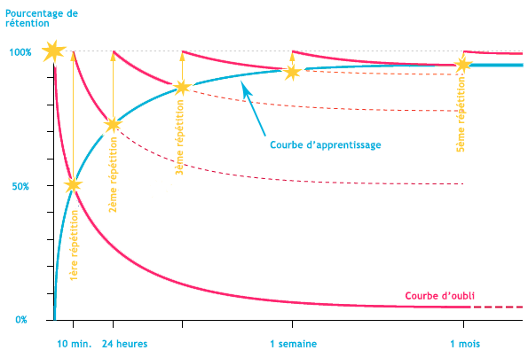
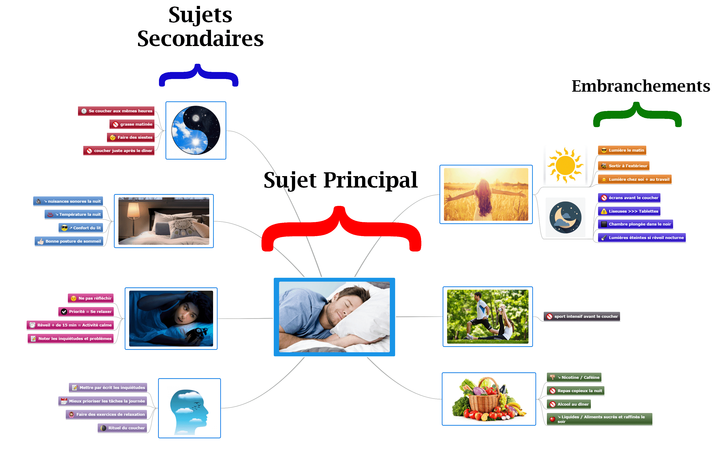
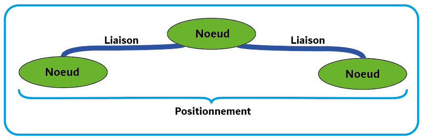
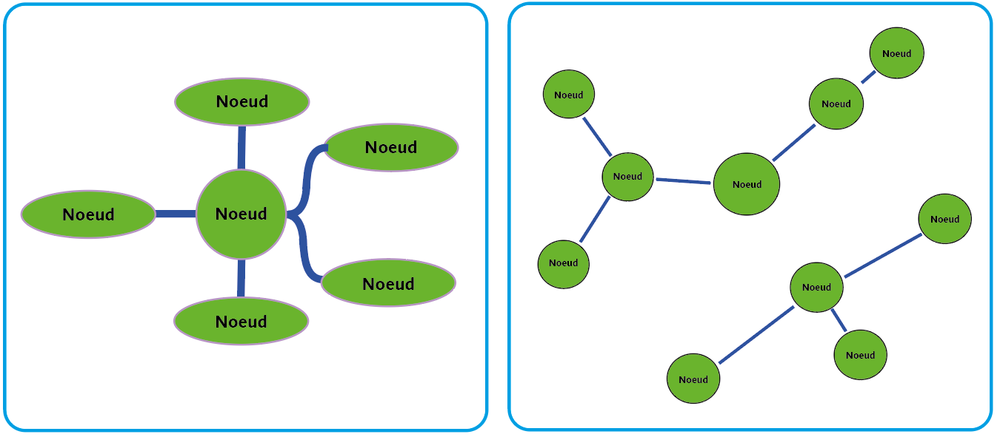
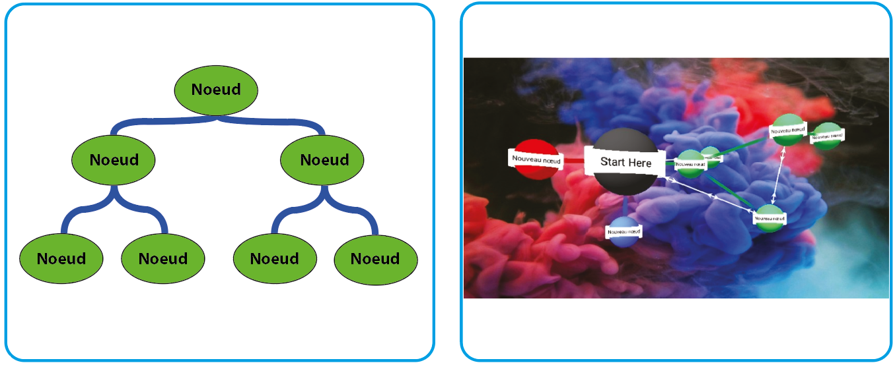
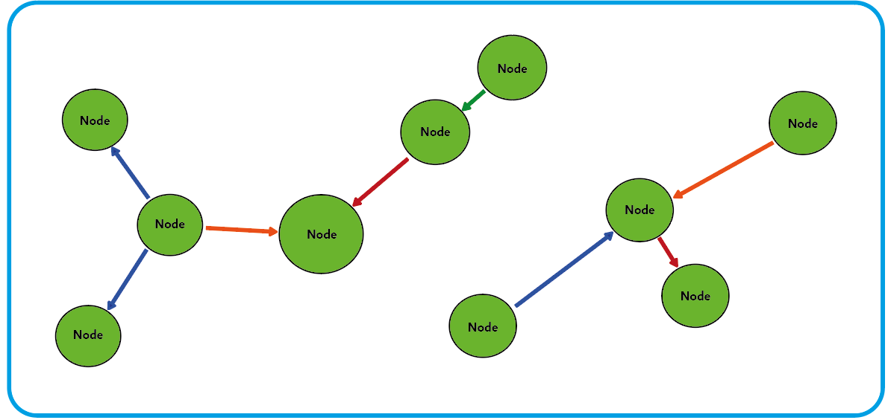

Nous sommes aujourd’hui nombreux à avoir déjà entendu parler ou même à avoir réalisé une mind map dans le cadre scolaire ou parfois professionnel à l’occasion d’un brainstorming. Ces représentations visuelles de concepts, informations ou idées sous forme de schéma, sont pourtant encore fortement sous estimées, et rares sont ceux à les utiliser au quotidien, comme alternative au texte traditionnel. Les mind maps présentent pourtant des qualités exceptionnelles, comme de permettre une lecture personnelle et non-linéaire de l’ensemble des données qui y sont présentées et favoriser l’apprentissage et la mémoire.
C’est pourquoi nous nous proposons dans cet article de revenir sur les multiples avantages de leur utilisation pour la mémoire, mais également sur les réticences que nous rencontrons à les utiliser. Enfin, nous chercherons à franchir le pas, en détaillant différentes topologies de mind maps variant en fonction des usages, nous permettant ainsi de mieux adapter cet outil à nos besoins.
Illustration - Liaisons neuronalesa
Elles permettent tout d’abord une utilisation plus profonde des différents types de mémoire, et notamment de la mémoire visuelle. Du fait que les images ont un pouvoir d’évocation bien plus important que les mots, la mémoire de celles-ci est particulièrement développée chez l’humain. Elles sont susceptibles de déclencher de multiples associations d’idées, favorisant la mémorisation et la créativité. De plus, le fait que la mind map repose sur l’emploi d’images ne suffit pas, en effet la mémorisation est encore augmentée du fait que la mind map elle-même est une image !
Non seulement la technique du mind mapping met en œuvre les capacités fondamentales de notre cerveau à traiter et à mémoriser l'information par l’image, mais elle nous invite aussi à exploiter les fonctions des deux hémisphères de notre cerveau. Ainsi, nous pouvons observer un rééquilibrage harmonieux dans l’utilisation de nos deux cortex, qui a notamment pour effet de rehausser la clarté et l'organisation de notre pensée.
De plus, Tony Buzan déclare que le mind mapping est la structure de données qui se rapproche le plus du fonctionnement de notre cerveau2. Cela peut s’expliquer par le fait que sa structure dynamique est totalement naturelle et organique. En effet, nous pouvons le remarquer dans sa matérialisation des points clés reliés les uns aux autres par des liaisons, aussi nombreuses que nécessaires, à la manière des innombrables synapses et connexions présentes dans notre cerveau.
D’autre part, le mind mapping fait un usage systématique de l’imagination, de l’association et de l’espace. Il permet de cette manière d’archiver des idées en cartographiant notre réflexion à partir de concepts. Cet outil facilite donc l'externalisation de nos images mentales intérieures (internal mental pictures3) selon T.Buzan. De plus, les mind maps nous donnent l’occasion de visualiser les relations entre différents concepts, semblant refléter nos schémas de pensée qui sont dits non-linéaires. En effet, des études récentes ont montré que le cerveau a une structure multidimensionnelle4, capable de recevoir, traiter et redonner des informations qui ne sont pas mises dans des formes conventionnelles et linéaires. Cette aptitude est notamment utilisée pour des éléments comme des photographies ou encore l’environnement qui nous entoure. Ce principe est d'ailleurs très lié au palais de la mémoire.
Enfin, la mind map peut être utile dans toutes les activités intellectuelles, en particulier celles de la mémorisation et de l’apprentissage. Non seulement le mind mapping permet d’augmenter la vitesse et l’efficacité de l’apprentissage, mais il aide aussi à compenser la courbe normale d’oubli5 selon laquelle 80% des éléments mémorisés sont oubliés dans les vingt-quatre heures suivant l’apprentissage. Ainsi, réviser les mind maps à intervalles réguliers favorise à la fois la mémoire à long et à court terme.

Représentation - Courbe de l'oubli de l'information au court du temps chez l'Homme
et sa retention par l'apprentissage b
L’expérience de l’utilisation des mind maps est vécue différemment au fil des âges, et pour illustrer cela, les études de Goodnough et Woods (2002)6, deux chercheurs de l'université de Newfoundland en science de l'éducation, et M.H.Williams (1999)7, chercheur en philosophie à l'Université de North Texas, ont confronté deux tranches d’âge à l’utilisation des mind maps. Il en est ressorti de l’étude de Goodnough et Woods qu’elles étaient plutôt appréciées chez les élèves et étudiants, tandis que l’étude de M.H. Williams a montré qu’une certaine réticence pour cet outil était présente chez les adultes. En effet, parmi les personnes étudiées beaucoup ont trouvé le mind mapping inconfortable à utiliser et ont senti un manque de structure et de spontanéité dans sa mise en application. Ces difficultés sont tout d’abord liées à une non confiance en soi ou non compétence pour le dessin mais aussi à une difficulté de corrélation des concepts. Il fallait ainsi du temps et de la pratique pour que les adultes se sentent plus à l’aise avec cet outil.
Nous pouvons à partir de ces faits, émettre l'hypothèse selon laquelle cet inconfort d’utilisation chez les adultes serait une question d’habitude, habitude qui, ancrée depuis longtemps, rend difficile à appréhender de nouvelles méthodes de visualisation et organisation de l’information. Ainsi, les raisons comme ne pas savoir dessiner ou organiser une mind map sont des questions d’habitude et d'entraînement, qui peuvent être changées plus facilement chez les jeunes chez qui elles sont moins ancrées.
Cette habitude ne va pas de pair avec notre manière d’enseigner et d’apprendre. En effet, depuis longtemps nous avons acquis et assumé l’idée que les informations doivent être stockées de façon linéaire : nous parlons et écrivons sous forme de phrases où chaque mot est hiérarchisé et mis à la suite d’un autre. Tony Buzan, dans son livre Mind mapping8 nous décrit cet aspect comme limitatif. Pendant un discours ou encore la lecture d’un livre, le contenu est énoncé un mot après l’autre, de manière linéaire, avec un début et une fin, ce qui nous conditionne au quotidien dans notre façon de nous exprimer et de nous organiser. Pour lui, les résumés traditionnels forcent les personnes à apprendre de manière linéaire, alors que notre cerveau ne fonctionne pas comme cela. Au contraire, en utilisant le mind mapping, nous développons de nouvelles façons de penser plus flexibles et plus puissantes que des façons plus traditionnelles qui sont utilisées partout dans le monde. C’est donc tout un système d’apprentissage qui est remis en cause.
Une étude appuie d'ailleurs notre hypothèse, celle de Margulies en 19919 qui explique qu’avant que les enfants n'apprennent une langue, ils visualisent dans leur esprit des images liées à des concepts. Cependant, une fois que les enfants sont formés à n'écrire que des mots d'une seule couleur, sur du papier ligné, leur pensée créative et leur flexibilité mentale diminuent, ce qui va dans le sens d’une habitude prise dès l’enfance.
Malgré la réticence et l’inconfort de certains à l’employer, le mind mapping est aujourd'hui présent dans de nombreux domaines et ne cherche qu’à étendre son utilisation. D’une part, cet outil permet une meilleure utilisation des compétences professionnelles fondamentales comme par exemple prendre des décisions, résoudre des problèmes ou encore utiliser sa mémoire et ses compétences de communication. Ces compétences étant nécessaires dans tout type d’entreprise, on retrouve donc les mind maps autant dans le management d’entreprise10 que dans la planification des soins des patients dans un hôpital11.
Illustration - Utilisation de mindmaps dans le cadre professionnel.c
D’autre part, cet outil a le grand avantage de permettre à son utilisateur de conserver une vision globale de ce qui est représenté tout en pouvant accéder à plusieurs niveaux de détails, ce qui favorise la compréhension de situations nouvelles et complexes. Ainsi, les mind maps nous permettent d’accéder à d’autres modes de réflexion et d’action, qui sont nécessaires dans la vie de tous les jours, que ce soit au travail ou dans notre vie privée. Dans les deux cas, les mind maps peuvent nous permettre d'augmenter certaines compétences ou diminuer certains coûts ou désaccords. Dans la même veine, des recherches effectuées par la Wharton School of Business12 ont montré qu’avec des aides visuelles de style mind maps, il est possible de réduire de 24% le temps des réunions, 64% des personnes sont capables de prendre des décisions plus rapidement et 79% des membres d’une réunion arrivent à un consensus contre 58% sans aide visuelle. Alors qu’attendons-nous pour les adopter au quotidien ?
Le mind mapping apparaît ainsi comme un outil puissant de mémorisation et de compréhension, rendant l’apprentissage et l’enseignement plus vivants et favorisant donc l'apprentissage par la motivation des apprenants.
Cet outil s’inscrit dans la théorie constructiviste13 prônant une vision subjective du monde. Celle-ci met l’accent sur le rôle de l'apprenant dans le contexte de son environnement. Ainsi, lorsqu’un apprenant est engagé dans son apprentissage à travers son interaction avec l'environnement, sa compréhension des notions est augmentée, améliorant par la même occasion sa mémorisation. Le lien entre apprentissage et environnement est un principe clé dans le palais de la mémoire qui est une technique de mémorisation consistant à visualiser un trajet ou un lieu connu dans lequel des éléments viennent nous rappeler des informations ou concepts. Cette technique permet de se créer une image mentale mémorisable qui nous est propre, transformant une information en image. Le mind mapping est un outil reprenant les principes du palais de la mémoire, tout en ayant ses propres spécificités.
Illustration - Mindmaps dans l'éducation d
L’étude de Goodnough et Woods en 20026 va d’ailleurs dans le sens de ces propos. Ils ont en effet découvert que les étudiants percevaient l'utilisation de cette technique comme une approche amusante, intéressante et motivante pour l'apprentissage. Plusieurs étudiants ont trouvé un aspect ludique lors de la création de mind maps grâce à une variété de choix de couleurs, de symboles, de mots-clés et de design. En outre, les étudiants ont préféré les utiliser dans une situation individuelle plutôt qu'une situation de groupe, car ils pouvaient exprimer leurs propres idées, leur faisant davantage sens.
Lorsque M. H. Williams7 relève dans son étude ce qui rend les personnes réticentes à l’utilisation des mind maps, deux facteurs reviennent particulièrement : le fait de ne pas savoir dessiner correctement, et donc représenter ses idées par des images au sein d’une mind map, et le fait de ne pas savoir construire et organiser correctement une mind map en elle-même. Nous allons maintenant voir que se mettre aux mind maps aujourd’hui n’a rien de sorcier, il suffit bien souvent d’une bonne application et d’un peu de volonté.
Au premier problème, savoir dessiner, apparaît aujourd’hui la solution du numérique. Ces 10 dernières années ont vu éclore une multitude de sites web et applications mobiles permettant de créer et stocker des mind maps comme nous le faisons avec des documents textes traditionnels. Brain, MindMeister ou Mindmup pour ne citer que les plus populaires, proposent des outils d’édition très avancés permettant d’inclure toute forme de ressource au sein de leurs mind maps : photo, vidéo, croquis, lien hypertexte… Plus besoin alors d’être Leonard de Vinci pour pouvoir illustrer simplement ses mind maps.
L’un des plus grands ennemis au bon usage des mind maps, est sans doute les idées reçues que nous nous faisons sur leur représentation. Si l’on demande à des personnes qui n’ont pas l’habitude d’utiliser une mind map d’en faire la représentation, ils vous montreront sans doute quelque chose ressemblant à cela :

Illustration - Représentation type d'une mindmap dans la conscience collective e
En effet, nous partageons une idée commune du mind map, une représentation comprenant une idée centrale depuis laquelle se déploient des branches plus ou moins complexes visant à décrire ou expliciter cette idée. Or, rappelons que la structure d’une mind map est inspirée de notre cerveau. Et s’il est certain que nous ne réfléchissons pas toujours de la même façon, et cela pour des usages aussi variés que comprendre un cours de philosophie ou se rappeler d’une liste de courses, il en va naturellement de même des mind maps. Comme l’évoque Tony Buzan14, les usages potentiels des mind maps sont très divers, et par conséquent la manière de les organiser dépend du but recherché. Nous avons appris à l’école à faire la distinction entre un discours argumentatif et un discours explicatif ou injonctif. Il doit en être de même pour les mind maps : nous devons comprendre leur topologie afin de les adapter à nos usages. Et identifier les usages, cela commence par définir le destinataire de notre mind map.
Première distinction importante, il est très différent de faire une mind map pour soi-même ou pour les autres. D’après l’étude de Goodnough et Woods6, une grande majorité des mind maps est destinée à leur créateur, pour les aider à apprendre ou mémoriser certains concepts, et encore trop peu créée dans le but d’être partagée. En effet, il est plus simple de comprendre les codes de ses propres mind maps, puisqu’elles vont spontanément suivre les codes de nos schémas de pensée. Une mind map partagée, au contraire, nécessite une plus grande exigence topologique, des codes partagés pour être collectivement compris, ce qui explique sans doute l’insuccès de cette seconde catégorie. Pourtant, il ne tient qu’à nous d’élaborer des mind maps à la topologie claire et compréhensible du plus grand nombre. Il suffit de maîtriser quelques notions que nous allons voir.
La première étape dans la compréhension de la topologie des mind maps, est de bien identifier les éléments qui les composent. Et pour cela, rien de mieux que de s’appuyer sur le vocabulaire de la théorie des graphes. Tout d’abord, une mind map se compose de nœuds (nodes) : généralement représentés sous forme de bulle, contenant souvent une courte phrase ou une image, un nœud est l’élément qui contient la donnée, l’information dans la mind map. Viennent ensuite les liens ou liaisons (links) entre ces différents nœuds : souvent sous-estimées, les liaisons apportent pourtant la structure à la représentation, l’axe devant guider la navigation et donc la réflexion du lecteur de la mind map. Enfin, il y a le positionnement : grand oublié, le placement d’un nœud en haut, en bas, ou au centre de la mind map a une influence cruciale dans l’appréhension générale du schéma et la hiérarchisation des concepts. A partir de ces trois notions de base, nous pouvons déjà distinguer des organisations différentes de mind map en fonction de l’usage recherché.
Illustration des éléments de vocabulaire f
Première distinction importante, très relative au positionnement, une mind map peut avoir un nœud en son centre, duquel semble découler les liaisons vers tous les autres nœuds, soit directement, soit par l’intermédiaire d’autres nœuds, ou alors avoir une organisation plus libre. La représentation centrée, la plus commune, a l’avantage de très spontanément structurer la mind map : elle invite à partir de l’idée centrale pour aller vers les nœuds moins centrés, elle hiérarchise les notions, donnant plus d’importance à celles proches du centre. Cette forme, très structurelle, est très adaptée à un processus de mémorisation, d’un cours tournant autour d’un concept précis par exemple, ou un processus d’apprentissage, guidant l’apprenant dans la manière de se figurer l’information pour en faire une connaissance. Mais cette représentation n’est pas sans défaut pour d’autres usages. En particulier, sa structure impose un axe de lecture qui peut être néfaste à un processus créatif, tel qu’un brainstorming par exemple. Dans ce cas, il est préférable d’opter pour une mind map à la structure plus libre, laissant une place plus neutre à chaque nœud, et permettant à chacun de naviguer à sa façon parmi les informations de la mind map.
Topologie centrée | Topologie libre g
Ne vous êtes-vous jamais demandé ce qui rapprochait l’arbre généalogique de votre famille et la maquette d’une molécule d’eau de vos cours de science ? Eh bien, la structure de ces deux représentations s’apparente à des mind maps, mais elles n’utilisent toutes deux pas le même nombre de dimension. Décortiquons cela : dans un arbre généalogique, chaque nœud, représentant une personne de votre famille, peut avoir soit des liaisons vers le haut, des parents, soit dans liaisons vers le bas, des enfants. Dans cet arbre, nous ne sommes amenés qu’à nous déplacer sur un seul axe haut-bas, une seule dimension. Cela hiérarchise très fortement l’information, obligeant d’ailleurs chaque individu à avoir une place bien précise : difficile de représenter dans cet arbre un fils qui serait son propre oncle, ou le père d’un de ses cousins, sans avoir de nœuds doublons (et quelques problèmes familiaux).
La maquette d’une molécule, au contraire, évolue en toute liberté dans un espace en trois dimensions. Chaque nœud (atome), peut avoir de nombreuses liaisons, sans qu’il soit nécessaire de dédoubler la présence du nœud dans le schéma, ou que plusieurs liaisons se croisent. C’est pourquoi ce type de représentation se développe beaucoup dans la data-visualisation scientifique, où l’on doit souvent représenter des systèmes de gros ensembles de données. Mais cette représentation 3D peut être également très utile pour des usages plus personnels, comme l’organisation de ses photos souvenirs, ou d’autres informations potentiellement assez denses. Des applications comme Mind Mapping 3D permettent aujourd’hui de facilement créer des mind maps 3D.
Enfin, les mind maps libres, que nous avons vues dans la partie précédente, sont des représentations en deux dimensions. Elles offrent une plus grande liberté que celles en 1D, mais peinent parfois à représenter des informations avec une grande densité de liaisons. Il est donc important en fonction du nombre de liaison que nous voulons créer dans notre mind map, de bien choisir son nombre de dimension.
Topologie 1D | Topologie 3D (capture de l’application Mind Mapping 3D) h
Enfin, dernière piste pour mieux organiser vos mind maps, il peut être intéressant de typer les liaisons entre vos nœuds. Nous avons vu que l’on pouvait considérer des liaisons parents et enfants dans l’arbre généalogique. De la même façon, il est possible d’associer une couleur ou une direction de trait aux liaisons pour préciser la relation entretenue par deux nœuds. L’une des plus grandes difficultés pour les autres pour comprendre vos mind maps réside dans le fait de saisir les relations que vous avez voulu expliciter entre les nœuds. Si on décrit généralement bien le contenu des nœuds, les liens qui les associent peuvent nous paraître naturels alors qu’ils sont loin de l’être pour les autres. Un conseil donc : n’hésitez pas à nommer les types de liaison dans vos mind maps, en associant les types à des couleurs par exemple, et créez une petite légende pour aider les autres à mieux vous comprendre.
Topologie libre 2D avec fléchage et couleurs des liaisons i
Voilà déjà quelques éléments qui vous aideront à franchir le pas vers l’univers merveilleux du mind mapping, ou de mieux saisir cet outil déjà dans vos habitudes. La topologie des mind maps va bien au-delà de ces quelques bases. Si le sujet vous intéresse, nous vous invitons à découvrir le travail de Tony Buzan sur le sujet, ou encore les nombreux livres sur la théorie des graphes.
__________________________________________________________________________________________
1 Anthony Peter Buzan, dit Tony Buzan, psychologue britannique et concepteur des cartes heuristiques (mind map en anglais). Introduction des Mind maps dans son livre Use your head , Londres, BBC Active, 1974.
2 Tony Buzan et Chris Griffiths, Le mind mapping au service du manager , Eyrolles Editions d’Organisation, 2011, p.8.
3 Tony Buzan et Barry Buzan, The mind map book , Londres, The BBC Active, 1993, p.37.
4 Reimann M.W., Nolte M., Scolamiero M., Turner K., Perin R., Chindemi G., Dłotko P., Levi R., Hess K. et Markram H., “Cliques of Neurons Bound into Cavities Provide a Missing Link between Structure and Function” , USA, Brandeis University, Paul Miller, 2017.
5 Aussi appelée courbe d’Ebbinghaus.
6 Goodnough, K., & Woods, R., “Student and teacher perceptions of mind mapping: A middle school case study” , Paper presented at the American Educational Research Association Annual Meeting, New Orleans, LA, 2002.
7 Williams, M.H., “The effects of a brain-based learning strategy, mind mapping, on achievement of adults in a training environment with consideration to learning styles and brain hemisphericity” , Unpublished doctoral dissertation, University of North Texas, 1999.
8 Tony Buzan, Mind Mapping , Londres, BBC Active, 2006, p.17.
9 Margulies S., Mapping Inner Space: Learning and Teaching Mind Mapping , Tucson, AZ, Zephyr, 1991.
10 Tony Buzan et Chris Griffiths, Le mind mapping au service du manager , Eyrolles Editions d’Organisation, 2011.
11 Jilla Burgess-Allen et Vicci Owen-Smith, “Using mind mapping techniques for rapid qualitative data analysis in public participation processes”, Health Expectations , 2010, p.406-415.
12 Lucas R.W., The big book of flip charts , UK, Mac Graw Hill Trade, 1999.
13 Marie-José Avenier, “Les paradigmes épistémologiques constructivistes : post-modernisme ou pragmatisme ? ”, Management & Avenir , n°43. , 2011, pages 372 à 391.
14 Tony Buzan, Mind Mapping: Kickstart Your Creativity and Transform Your Life , Londres, BBC Active, 2006.
Özgül Keleş, "Elementary Teachers‟ Views on Mind Mapping" , Turkey, Faculty of Education, Aksaray University, 2012.
Jilla Burgess‐Allen BA, MSc Vicci Owen‐Smith MBBS, "Using mind mapping techniques for rapid qualitative data analysis in public participation processes" , Public Health Department, NHS Stockport, Stockport, 2010.
Ying Liu, Guoqing Zhao, Guozhen Ma et Yuwei Bo, "The Effect of Mind Mapping on Teaching and Learning : A Meta-Analysis", Standard Journal of Education and Essay , 2014.
Marie-José Avenier, "Les paradigmes épistémologiques constructivistes : post-modernisme ou pragmatisme ?", Management & Avenir , n°43, p.372-391, 2011.
Tony Buzan, Mind mapping , Londres, BBC Active, 2006.
Jean-Luc Deladrière, Frédéric Le Bihan, Pierre Mongin, Denis Rebaud, Organisez vos idées avec le mind mapping , Paris, Dunod, 2014.
Astrid Brinkmann, "Graphical Knowledge Display – Mind Mapping and Concept Mapping as Efficient Tools in Mathematics Education", Mathematics Education Review , n°16, University of Duisburg, Germany, 2003.
Tony Buzan et Chris Griffiths, Le mind mapping au service du manager , Eyrolles Editions d’Organisation, 2011.
Brett D. Jones, Chloe Ruf, Jennifer Dee Snyder, "The Effects of Mind Mapping Activities on Students' Motivation", International Journal for the Scholarship of Teaching and Learning , Georgia Southern University, 2012.
Tony Buzan et Barry Buzan, The mind map book , Londres, The BBC Active, 1993.
https://www.penserchanger.com/
https://sathyanands.medium.com/
https://www.mindmapping.com/fr/
Image de couverture - https://www.gettyimages.fr
a https://www.behance.net/FedericaFragapane
b https://profpower.lelivrescolaire.fr/wp-content/uploads/2018/03/Courbe-doubli.png
d https://i0.wp.com/ecolepositive.fr/wp-content/uploads/2016/08/cartes_mentales_nom.jpg?w=564&ssl=1
f g h i Créations personnelles.
{kind=link}
{kind=link}
{kind=link}